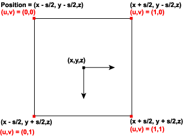

A screen-space point,
P = (X, Y, Z, W),
of screen-space size S is rasterized as a quadrilateral of the following four vertices:
((X+S/2, Y+S/2, Z, W), (X+S/2, Y-S/2, Z, W), (X-S/2, Y-S/2, Z, W), (X-S/2, Y+S/2, Z, W))
The vertex color attributes are duplicated at each vertex; thus, each point is always rendered with constant colors.
The assignment of texture indices is controlled by the D3DRS_POINTSPRITEENABLE render state setting. If D3DRS_POINTSPRITEENABLE is set to FALSE, then the vertex texture coordinates are duplicated at each vertex. If D3DRS_POINTSPRITEENABLE is set to TRUE, then the texture coordinates at the four vertices are set to the following values:
(0.0f, 0.0f), (0.0f, 1.0f), (1.0f, 0.0f), (1.0f, 1.0f)
This is shown in the following diagram.

When clipping is enabled, points are clipped in the following manner. If the vertex exceeds the range of depth values—MinZ and MaxZ of the D3DVIEWPORT8 structure—into which a scene is to be rendered, the point exists outside of the view frustum and is not rendered. If the point, taking into account the point size, is completely outside the viewport in X and Y, then the point is not rendered; the remaining points are rendered. It is possible for the point position to be outside the viewport in X or Y and still be partially visible.
On Xbox, scaled points are correctly clipped to user-defined clip planes.